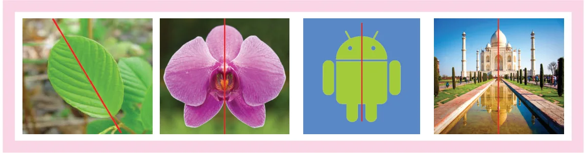
In the given figures, the red coloured line divides each figure into two equal halves and suppose we fold them along that line, we will see that one half of each figure exactly coincides with the other half. Such figures are symmetrical about that line and that line is called the line of symmetry or the axis of symmetry.
Look at the given invitation cards, the fold line of the first card divides it into two equal halves and each half exactly coincides. Hence it is a line of symmetry but in the second card, the fold line does not divide it into two equal halves. So,it is not a line of symmetry.
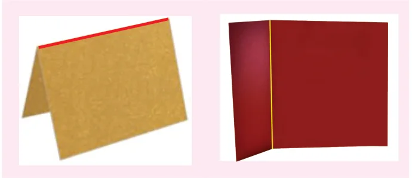
A figure may have one, two, three or more lines of symmetry or no line of symmetry.
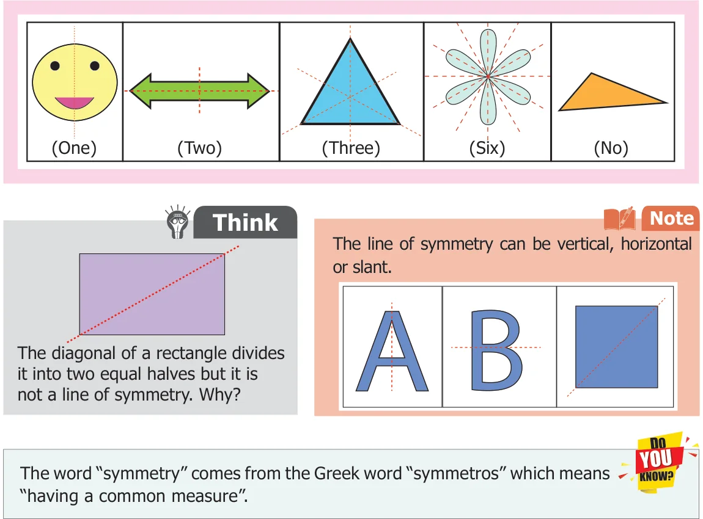
Some examples for Symmetry
Symmetry can be found anywhere in nature as well as in man-made objects. A few of them are leaves, insects, flowers, animals, note books, bottles, architecture, designs and shapes, etc.,
We observe a few symmetrical things in our surroundings as follows.
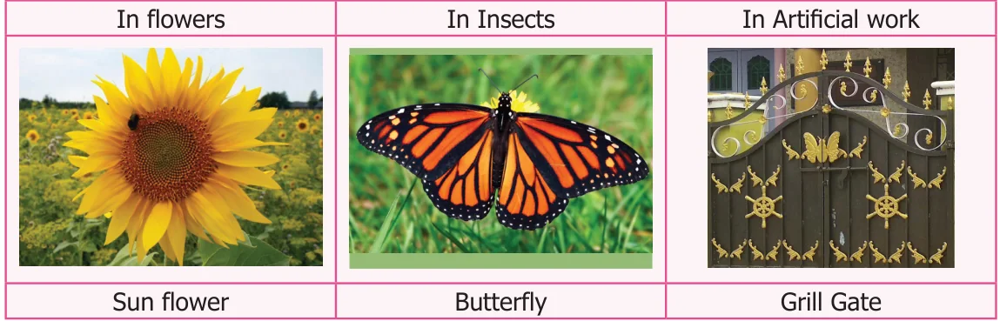
Symmetry in Kolams
In Tamilnadu, our people usually decorate their corridors by beautiful kolams using rice flour. Those kolams look beautiful as most of them are symmetrical.
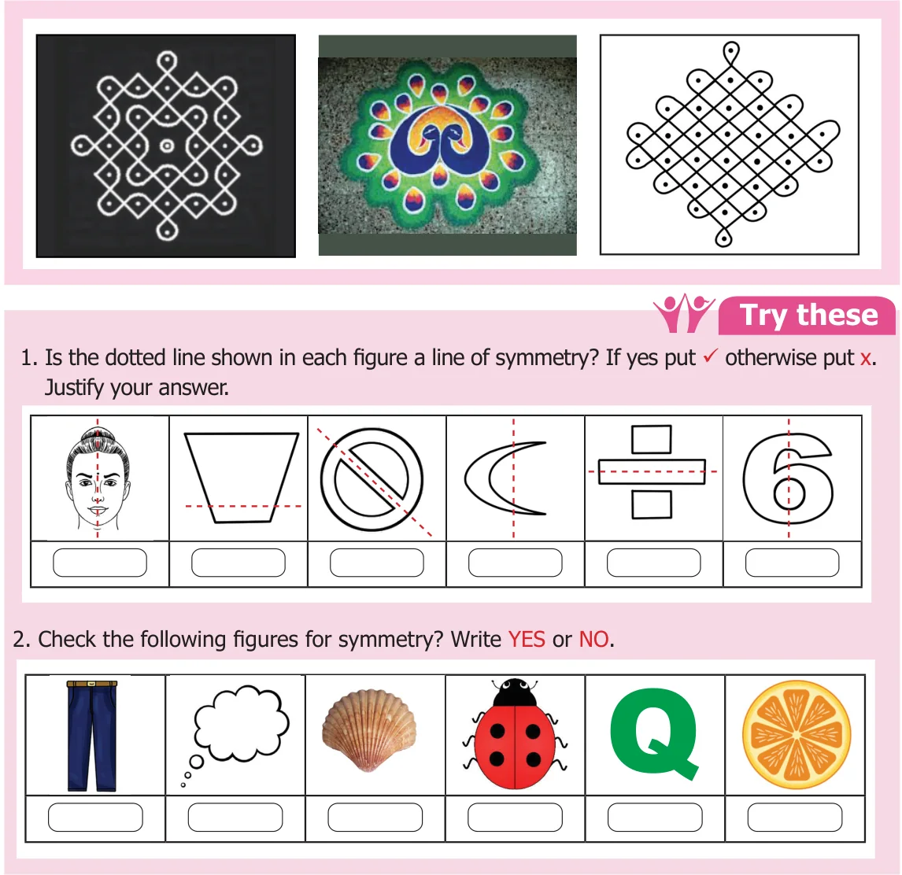
Example 1 Draw the lines of symmetry for the given figures and also find the number of lines of symmetry.
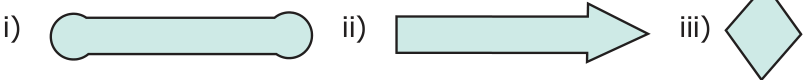
Solution:
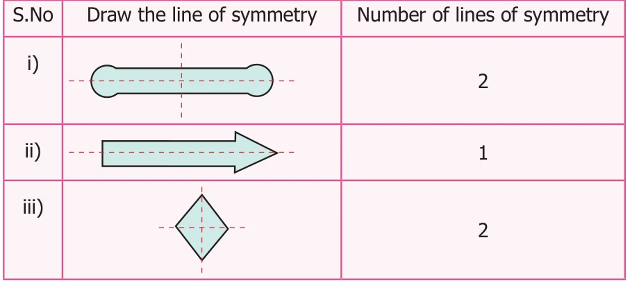
Example 2 Draw the lines of symmetry for each of the letters in the word RHOMBUS and also find the number of lines of symmetry. (Note: Here the letter 'O' is in circle shape.)
Solution
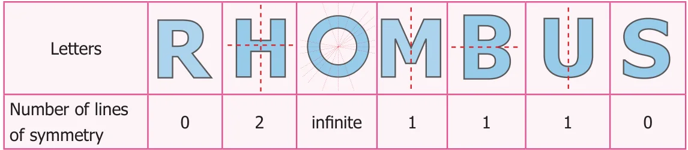
Example 3 Draw the lines of symmetry for an equilateral triangle, a square, a regular pentagon and a regular hexagon and also find the number of lines of symmetry.
Solution
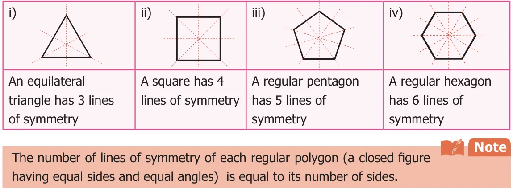
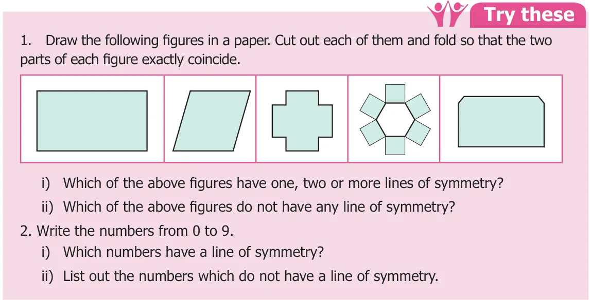
Example 4 Complete the other half of the following figures such that the dotted line is a line of symmetry.
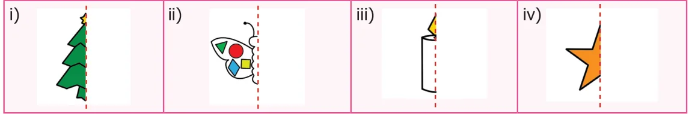
Solution
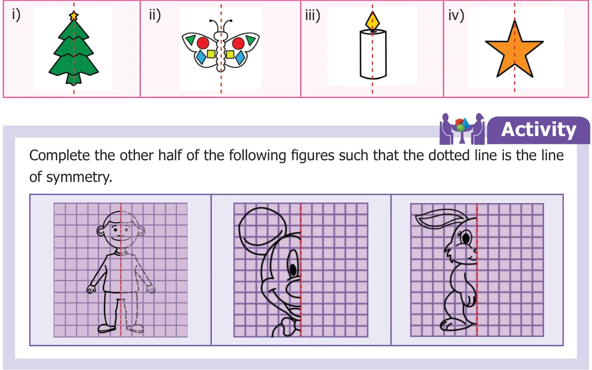